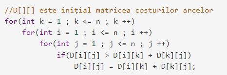
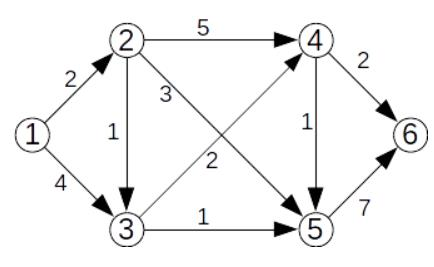

Algoritmul lui Roy-Floyd
| Algoritmul Roy-Floyd este folosit in diverse domenii des întalnite, de la controlul avioanelor de pe un anumit aeroport pana la jocuri informatice, rolul principal fiind acela de găsire a drumului de cost minim între un obiect principal si o ținta anume.
Problemă: Se dă un graf orientat ponderat cu n noduri și m arce – în care fiecare arc are asociat un cost, număr natural strict pozitiv. Folosind algoritmul Roy-Floyd, construiți matricea costurilor minime, a[i][j] fiind costul minim al unui drum de la i la j, dacă există un asemenea drum, sau -1 în caz contrar. |
 |
#include bits/stdc++.h
using namespace std;
ifstream cin("roy-floyd.in");
ofstream cout("roy-floyd.out");
const int Inf = 0x3f3f3f3f;
int n, m, x, y, w, c[101][101];
void Floyd_Warshall()
{
for (int k = 1; k <= n; ++k)
for (int i = 1; i <= n; ++i)
for (int j = 1; j <= n; ++j)
if (i != j && c[i][j] > c[i][k] + c[k][j])
c[i][j] = c[i][k] + c[k][j];
}
int main()
{
cin >> n >> m;
for (int i = 1 ; i <= n ; ++i)
for (int j = 1 ; j <= n ; ++j)
if (i != j)
c[i][j] = Inf;
for(int i = 1 ; i <= m ; i++)
{
cin >> x >> y >> w;
c[x][y] = w;
}
Floyd_Warshall();
for (int i = 1 ; i <= n ; ++i)
{
for (int j = 1 ; j <= n ; ++j)
if(c[i][j] != Inf)
cout << c[i][j] << ' ';
else
cout << "-1 ";
cout << '\n';
}
}
|
Algoritmul lui Dijkstra
Algoritmul lui Dijkstra determină pentru un nod dat într-un graf orientat cu costuri costurileminime ale drumurilor
care au acel nod ca extremitate inițială.
Mai precis, pentru un nod s – sursă, algoritmul determină pentru orice nod x costul minim al unui drum de la s la x.
Strategia algoritmului lui Dijkstra este una de tip Greedy
Algoritm:
1. Se creează o listă cu distanțe, o listă cu nodul anterior, o listă cu nodurile vizitate și un nod curent.
2. Toate valorile din lista cu distanțe sunt inițializate cu o valoare infinită, cu excepția nodului de start, care este
setat cu 0.
3. Toate valorile din lista cu nodurile vizitate sunt setate cu fals.
4. Toate valorile din lista cu nodurile anterioare sunt inițializate cu -1.
5. Nodul de start este setat ca nodul curent.
6. Se marchează ca vizitat nodul curent.
7. Se actualizează distanțele, pe baza nodurilor care pot fi vizitate imediat din nodul curent.
8. Se actualizează nodul curent la nodul nevizitat care poate fi vizitat prin calea cea mai scurtă de la nodul de start.
9. Se repetă (de la punctul 6) până când toate nodurile sunt vizitate.
Aplicarea algoritmului lui Djkstra pentru graful de mai jos, unde s=1;

|
#define INFINIT 1000000000
...
//nodul sursa este s
...
for(i =1 ; i <= n ; i ++ )
{
f[i] = 0;
d[i] = a[s][i];
}
f[s] = 1, d[s] = 0;
d[0] = INFINIT; // pentru determinarea nodului cu costul minim
for(int k = 1 ; k < n ; ++k)
{
int pmax = 0;
for(i = 1 ; i <= n ; ++i)
if(f[i] == 0 && d[i] < d[pmax])
pmax = i;
if(pmax > -1)
{ f[pmax] = 1;
for(i = 1; i <= n ; ++i)
if(f[i] == 0 && d[i] > d[pmax] + a[pmax][i])
d[i] = d[pmax] + a[pmax][i]; }
}
|
Algoritmul lui Prim
Algoritmul lui Prim permite determinarea unui arbore parțial de cost minim (APM) într-un graf ponderat
cu N noduri.
Descrierea algoritmului:
Determinarea APM-ului se face astfel:
• se stabilește un nod de plecare; acesta va fi rădăcina arborelui, care se va crea pas cu pas, prin adăugarea de
noi noduri;
• în mod repetat:
o se alege un nod neadăugat încă în arborele curent pentru care muchia dintre el și un nod din arbore
are cost minim;
o se adăugă nodul în arbore;
• când nu se mai poate face alegerea unui asemenea nod, fie au fost adăugate toate nodurile,
fie graful nu este conex și au fost adăugate în arbore toate nodurile din componenta conexă a nodul inițial;
• dacă graful nu este conex, continuăm cu următoarea componentă conexă.
Algoritmul poate fi implementat în mai multe moduri, cu complexități diferite.
Problema:
Se dă un graf neorientat ponderat conex cu n vârfuri și m muchii – în care fiecare muchie are
asociat un cost, număr natural strict pozitiv. Folosind algoritmul lui Prim, determinați
un arbore parțial de cost minim, cu rădăcina în vârful 1.
|
#include |
Algoritmul lui Kruskal
Algoritmul lui Kruskal permite determinarea unui arbore parțial de cost minim (APM) într-un
graf ponderat cu N noduri.
Pentru a determina APM-ul se pleacă de la o pădure formată din N subarbori. Fiecare nod al grafului
reprezintă inițial un subarbore. Aceștia vor fi reuniți succesiv prin muchii, până când se obține un
singur arbore (dacă graful este conex) sau până când acest lucru nu mai este posibil (dacă graful nu este
conex).
Algoritmul este:
-se ordonează muchiile grafului crescător după cost;
-se analizează pe rând muchiile grafului, în ordinea crescătoare a costurilor;
-pentru fiecare muchie analizată:
o dacă extremitățile muchiei fac parte din același subarbore, muchia se ignoră
o dacă extremitățile muchiei fac parte din subarbori diferiți, aceștia se vor reuni, iar
muchia respectivă face parte din APM.
|
struct muchie
{
int i,j,cost;
};
int n , m , t[101];
muchie x[5000];
int main()
{
cin >> n >> m;
for(int i = 0 ; i < m ; ++i)
cin >> x[i].i >> x[i].j >> x[i].cost;
//sortare tablou x[] după campul cost
// ... de completat
//initializare reprezentanti
for(int i =1 ; i <= n ; ++i)
t[i] = i;
//determinare APM
int S = 0, cnt = 0;
for(int i = 0 ; i < m && cnt < n ; i ++)
if(t[x[i].i] != t[x[i].j]) // extremitatile fac
parte din subrabori diferiti
{
S += x[i].cost;
//reunim subarborii
int ai = t[x[i].i], aj = t[x[i].j];
for(int j =1 ; j <= n ; ++j)
if(t[j] == aj)
t[j] = ai;
}
cout << S << "\n";
return 0;
}
|